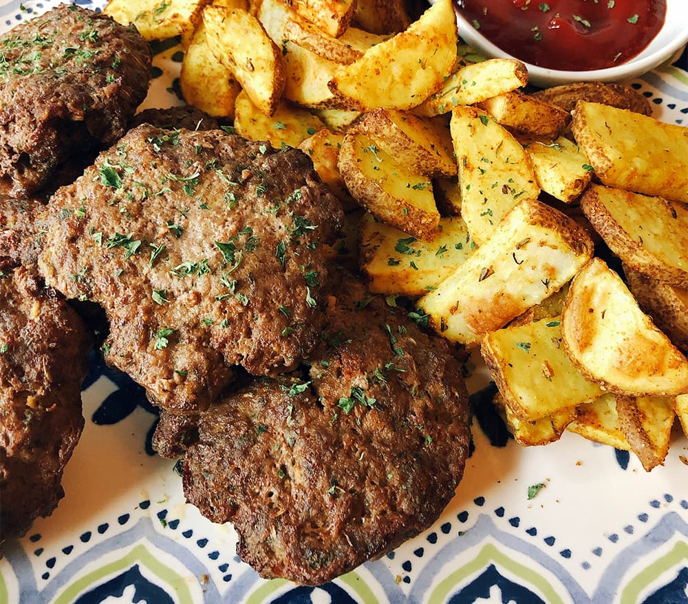

Hamburger

Description
Frikadellen, the original hamburger, are served like a flattened meatball with string beans and salad.
Ingredients
- 1 kaiser roll
- ⅔ pound ground beef
- ⅓ pound ground pork
- 1 onion, finely chopped
- ¼ cup chopped fresh parsley
- 1 large egg
- 1 teaspoon Hungarian hot paprika (Optional)
- salt and ground black pepper to taste
Steps
- Soak kaiser roll in a medium bowl of water for 10 minutes. Drain and squeeze out excess water; crumble into a large bowl.
- Add ground meats, onion, parsley, egg, paprika, salt, and black pepper to crumbled roll; mix until well blended. Shape mixture into large flattened meatballs.
- Heat a large nonstick skillet over medium heat. Fry meatballs in the hot skillet until browned and no longer pink in the center, about 5 minutes per side. An instant-read thermometer inserted into the center of a patty should read at least 160 degrees F (70 degrees C).
Home